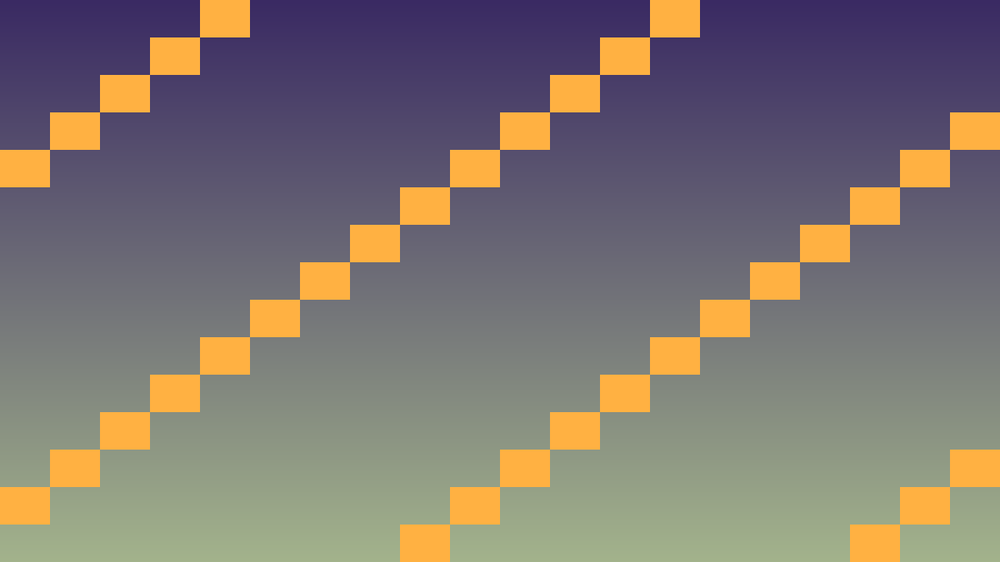

3.3 Signal (signāli) un object communication (objektu komunikācija)
Stundas uzdevums: Apgūt Godot signal (signālā) system (sistēmu) object (objektu) komunikācijai.
80 min plāns: Teorija un paraugs (~10 min) · 1. uzdevums (~20 min) - reģistrē un raidi signal (signālu) · 2. uzdevums (~25 min) - pieslēdzies signal (signālam) no cita object (objekta) · 3. uzdevums (~20 min) - salīdzini signal (signālu) ar tiešu izsaukumu · Iesniegšana (~5 min).
Pirms sāc: atver savu project (projektu) ar dalībnieku class (klasēm). Signal (signāls) ir kā paziņojums: viens object (objekts) pasaka "tas notika", bet citi paši izlemj, vai klausīties.
Teorija: Godot Signals (signāli)
Godot signal (signāli) ir veids, kā object (objekti) var sazināties bez tieša savienojuma. Viens object (objekts) emit (raida) signal (signālu), citi connect (pievienojas), lai uz to reaģētu.
using Godot;
using System;
public partial class Participant : Node
{
[Signal] public delegate void FinishedEventHandler(string name);
[Signal] public delegate void PenaltyAppliedEventHandler(int amount);
private int energy = 100;
private string participantName = "Anna";
public void ApplyPenalty(int amount)
{
energy -= amount;
EmitSignal(SignalName.PenaltyApplied, amount);
if (energy <= 0)
EmitSignal(SignalName.Finished, participantName);
}
}Citur code (kodā):
hero.Finished += OnHeroFinished;Kā šo izmantot project (projektā)
Atceries: ar redzamu efektu editor (redaktorā) nepietiek. Paskaidro, kura C# class (klase) glabā state (stāvokli), kura method (metode) to maina un kā Godot node (mezgls) structure (struktūra) izmanto šo code (kodu).
Pārbaudi: katrai būtiskai turnīra lomai ir C# class (klase) vienā .cs file (failā), ar constructor (konstruktoriem), method (metodēm), signal (signāliem) vai inheritance (mantošanu).
public class OopCheckpoint
{
public string Lesson = "3.3 Signāli un objektu komunikācija";
public bool UsesCSharp = true;
public bool HasScriptFile = true;
public bool HasSingleResponsibility = true;
public bool UsesGodotInspector = true;
}Praktiskie uzdevumi
1. uzdevums -
Reģistrē un raidi signal (signālu)
Beigās tavs object (objekts) pratīs paziņot, ka tas beidzis darbu.
- Nomaini
Participanttā, lai tā mantotu noNode(mezgls):public partial class Participant : Node. - Pievieno class (klasē) signal (signālu)
[Signal] public delegate void FinishedEventHandler(string name);. - Uzraksti method (metodē)
ApplyPenaltypārbaudi, vai enerģija nokritusi līdz 0. - Izsauc tajā
EmitSignal(SignalName.Finished, Name);. - Būvē project (projektu) un pievieno object (objektu) scene (scēnai).
- Pārbaudi Godot editor (redaktorā) tab (cilnē) Node (mezgls) -> Signals (signāli), vai signal (signāls)
finishedtur ir redzams. - Pieraksti, kas notiek, ja
[Signal](signāla atribūts) rindu izdzēš.
Gatavs, kad: Godot editor (redaktora) Signals (signāli) list (sarakstā) parādās tavs signal (signāls) finished.
2. uzdevums -
Pieslēdzies signal (signālam) no cita object (objekta)
Beigās cits object (objekts) uzzinās par event (notikumu), tieši to nepārbaudot.
- Izveido C# class (klasi)
TournamentManager, kas manto noNode(mezgls). - Pievieno tai method (metodi)
private void OnParticipantFinished(string name). - Paņem dalībnieku ar
Participant participant = GetNode<Participant>("Participant");. - Savieno
_Ready()method (metodē) signal (signālu) arparticipant.Finished += OnParticipantFinished;. - Izdrukā handler (apstrādātājā), kurš dalībnieks beidzis darbu.
- Būvē un samazini dalībnieka enerģiju līdz nullei.
- Pārbaudi Output (izdrukām) panel (panelī), ka paziņojums pienāca.
Gatavs, kad: kad dalībnieka enerģija sasniedz 0, menedžeris izdrukā tā vārdu, lai gan pats to nepārbaudīja.
3. uzdevums -
Salīdzini signal (signālu) ar tiešu izsaukumu
Beigās tu zināsi, kāpēc signal (signāli) ir ērtāki par tiešu link (saiti).
- Pievieno otru dalībnieku un pieslēdz arī to tam pašam signal (signālam).
- Samazini abu enerģiju un pārbaudi, ka pienāk divi paziņojumi.
- Iedomājies variantu, kur
Participantpats izsauktu menedžeri, un pieraksti, ko tad vajadzētu glabāt katrā dalībniekā. - Pieraksti, kas notiktu ar šo variantu, ja menedžera scene (scēnā) nav.
- Atvieno vienu dalībnieku ar
participant.Finished -= OnParticipantFinished;un pārbaudi vēlreiz. - Pieraksti, cik paziņojumu tagad pienāca.
- Pieraksti secinājumu: kurš object (objekts) zina par kuru.
Gatavs, kad: abi dalībnieki raida signal (signālu) neatkarīgi, un atvienotais vairs neizraisa paziņojumu.
Papildu uzdevums - Pievieno signal (signālam) vairāk data (datu)
Ja pamatdarbs ir gatavs, nodod signal (signālā) arī skaitli.
- Papildini signal (signāla) delegate (deleģāts) ar otru parameter (parametru), piemēram atlikušo enerģiju.
- Nodod to
EmitSignalizsaukumā. - Papildini handler (apstrādātāja) method (metodi) ar otru parameter (parametru).
- Izdrukā abus data (datus).
- Pārbaudi, ka compiler (kompilators) sūdzas, ja parameter (parametru) skaits nesakrīt.
Gatavs, kad: signal (signāls) nodod gan vārdu, gan skaitli, un tie abi parādās izdrukā.
Ko sagatavo
Stundas mērķis: Tu proti C# class (klasē) reģistrēt Godot signal (signālu), to raidīt event (notikuma) brīdī un pieslēgt tam citu object (objektu), un vari izskaidrot, kāpēc signal (signāls) ir ērtāks par tiešu izsaukumu.
GitHub repository (krātuvē) jābūt:
- File (faili) ar
[Signal](signāla atribūts),EmitSignalun+=signal (signāla) pieslēgumu. - Screenshot (ekrānuzņēmums) ar Godot Node (mezgls) -> Signals (signāli) tab (cilni), kurā redzams tavs signal (signāls).
- Screenshot (ekrānuzņēmums) ar Output (izdrukām) panel (paneli), kurā redzami abu dalībnieku paziņojumi.
- README.md: viens teikums par to, kurš object (objekts) par kuru zina, lietojot signal (signālus).
Kā iesniedz: Veic commit (izmaiņu fiksējums) un push (nosūtīšana uz attālo krātuvi). Skolotāja norādītajā vietā ievieto tikai GitHub repository (krātuves) link (saiti); visiem prasītajiem file (failiem), README.md pierakstiem un pierādījumiem jābūt pašā repository (krātuvē).
Biežākās kļūdas
- EmitSignal nav efekta: signal (signāls) nav pieteikts ar
[Signal](signāla atribūts) vai netiek izsaukts pareizaisSignalName. - Handler (apstrādātājs) kļūda: handler (apstrādātāja) parameter (parametru) skaitam un type (tipiem) jāsakrīt ar signal (signāla) delegate (deleģāts).
- Signal (signāls) saņemts vairākkārt:
+=izsaukts vairākas reizes - pieslēdz signal (signālu) vienā vietā, parasti_Ready().
Godot screenshot (ekrānuzņēmumi)

Code sample (koda piemērs) (paplašināts)
using Godot;
using System;
public partial class Participant : Node
{
[Signal] public delegate void PenaltyAppliedEventHandler(int amount);
[Signal] public delegate void FinishedEventHandler(string name);
private int energy = 100;
private string participantName = "Anna";
public void ApplyPenalty(int amount)
{
energy = Math.Max(0, energy - amount);
EmitSignal(SignalName.PenaltyApplied, amount);
if (energy == 0)
EmitSignal(SignalName.Finished, participantName);
}
}
public partial class Game : Node
{
public override void _Ready()
{
Participant anna = GetNode<Participant>("Anna");
anna.PenaltyApplied += OnPenalty;
anna.Finished += OnFinished;
}
private void OnPenalty(int amount) { }
private void OnFinished(string name) { }
}